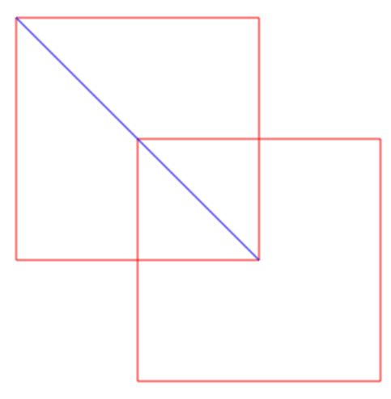

w13 <<
Previous Next >> w14_hw
w13_hw
請在下列圖形中的兩個正方形外圍, 以黑色畫筆畫圓, 並設法在各線條所圍成的封閉區域塗上不同顏色. 操作過程請拍攝影片, 並在頁面中列出作業心得.

解:
圖形的程式碼
心得:
這段程式充分利用了 Brython 的特性，將 Python 代碼嵌入到網頁中，實現了用 Python 繪製圖形的功能。，除此之外程式中繪製了多個圓形、三角形、矩形等基本圖形 ， 並且運用了多種顏色 ，讓圖形變得多彩繽紛，也提升了程式的視覺效果， 段程式讓我對 Brython 的使用和 Python 在瀏覽器中運行的潛力有了更深刻的了解。這不僅展示了如何用 Python 進行圖形繪製，還讓我學到了如何結合 HTML、CSS 和 JavaScript（在這裡是 Brython）來創建動態的視覺效果。
訓練gpt給出我想要的程式花了最多的時間!!!!
影片:
from browser import html
from browser import document as doc
import math
# 創建一個500x500像素的畫布
canvas = html.CANVAS(width=500, height=500)
# 把畫布加入到頁面的div元素中
brython_div = doc["brython_div1"]
brython_div <= canvas
# 獲取畫布的繪圖上下文
ctx = canvas.getContext("2d")
# 設置畫筆寬度
ctx.lineWidth = 4
# 設置混色模式為"screem"，這會讓新畫的顏色與舊顏色進行混合
ctx.globalCompositeOperation = "screem"
# 設置描邊顏色為黑色
ctx.strokeStyle = 'black'
# 繪製第一個圓形，分為四個顏色
# 第一個圓段 (Turquoise 顏色)
ctx.beginPath()
ctx.arc(160, 160, 141, 0.25 * math.pi, 0.75 * math.pi)
ctx.fillStyle = "Turquoise"
ctx.fill()
ctx.stroke()
# 第二個圓段 (pink 顏色)
ctx.beginPath()
ctx.arc(160, 160, 141, 0.75 * math.pi, 1.25 * math.pi)
ctx.fillStyle = "pink"
ctx.fill()
ctx.stroke()
# 第三個圓段 (Lavender 顏色)
ctx.beginPath()
ctx.arc(160, 160, 141, 1.25 * math.pi, 1.75 * math.pi)
ctx.fillStyle = "Lavender"
ctx.fill()
ctx.stroke()
# 第四個圓段 (LightCoral 顏色)
ctx.beginPath()
ctx.arc(160, 160, 141, 1.75 * math.pi, 0.25 * math.pi)
ctx.fillStyle = "LightCoral "
ctx.fill()
ctx.stroke()
# 繪製第二個圓形，這個圓形也分為四個顏色
# 第一個圓段 (BurlyWood 顏色)
ctx.beginPath()
ctx.arc(260, 260, 141, 1.25 * math.pi, 1.75 * math.pi)
ctx.fillStyle = "BurlyWood "
ctx.fill()
ctx.stroke()
# 第二個圓段 (LightSkyBlue 顏色)
ctx.beginPath()
ctx.arc(260, 260, 141, 1.75 * math.pi, 0.25 * math.pi)
ctx.fillStyle = "LightSkyBlue "
ctx.fill()
ctx.stroke()
# 第三個圓段 (LavenderBlush 顏色)
ctx.beginPath()
ctx.arc(260, 260, 141, 0.25 * math.pi, 0.75 * math.pi)
ctx.fillStyle = "LavenderBlush"
ctx.fill()
ctx.stroke()
# 第四個圓段 (PeachPuff 顏色)
ctx.beginPath()
ctx.arc(260, 260, 141, 0.75 * math.pi, 1.25 * math.pi)
ctx.fillStyle = "PeachPuff "
ctx.fill()
ctx.stroke()
# 繪製紅色邊框的三角形，並用不同顏色填充
# 第一個三角形 (LightSalmon 顏色)
ctx.strokeStyle = 'red'
ctx.beginPath()
ctx.moveTo(60, 60) # 三角形的起點
ctx.lineTo(60, 260) # 連接到 (60, 260)
ctx.lineTo(260, 260) # 連接到 (260, 260)
ctx.fillStyle = "LightSalmon "
ctx.fill()
ctx.stroke()
# 第二個三角形 (Honeydew 顏色)
ctx.beginPath()
ctx.moveTo(60, 60)
ctx.lineTo(260, 60) # 連接到 (260, 60)
ctx.lineTo(260, 260)
ctx.fillStyle = "Honeydew"
ctx.fill()
ctx.stroke()
# 第三個三角形 (LightBlue 顏色)
ctx.beginPath()
ctx.moveTo(160, 160)
ctx.lineTo(360, 160) # 連接到 (360, 160)
ctx.lineTo(360, 360)
ctx.fillStyle = "LightBlue"
ctx.fill()
ctx.stroke()
# 第四個三角形 (PaleGoldenRod 顏色)
ctx.beginPath()
ctx.moveTo(160, 160)
ctx.lineTo(160, 360) # 連接到 (160, 360)
ctx.lineTo(360, 360)
ctx.fillStyle = "PaleGoldenRod"
ctx.fill()
ctx.stroke()
# 繪製兩個重疊的小矩形
# 第一個小矩形 (PaleVioletRed 顏色)
ctx.beginPath()
ctx.moveTo(160, 160)
ctx.lineTo(160, 260) # 連接到 (160, 260)
ctx.lineTo(260, 260)
ctx.fillStyle = "PaleVioletRed"
ctx.fill()
ctx.stroke()
# 第二個小矩形 (PaleGreen 顏色)
ctx.beginPath()
ctx.moveTo(160, 160)
ctx.lineTo(260, 160) # 連接到 (260, 160)
ctx.lineTo(260, 260)
ctx.fillStyle = "PaleGreen"
ctx.fill()
ctx.stroke()
# 繪製藍色的斜線
ctx.strokeStyle = 'blue'
ctx.beginPath()
ctx.moveTo(60, 60) # 斜線起點 (60, 60)
ctx.lineTo(260, 260) # 斜線終點 (260, 260)
ctx.stroke()
Brython Example
 原始碼中<script src="./../cmsimde/static/brython.js"></script>
原始碼中<script src="./../cmsimde/static/brython.js"></script>
<script src="./../cmsimde/static/brython_stdlib.js"></script>
這一段的用途?
<script src="./../cmsimde/static/brython.js"></script>:
- 這一行加載了
brython.js 文件，這是 Brython 的核心庫，它使得瀏覽器能夠運行 Python 代碼。這段 JavaScript 代碼會將 Python 代碼轉換並執行在瀏覽器中，就像執行 JavaScript 一樣。
./../cmsimde/static/ 是指向 brython.js 的相對路徑，意味著該文件位於相對於當前 HTML 文件的某個目錄下。
<script src="./../cmsimde/static/brython_stdlib.js"></script>:
- 這一行加載了 Brython 的核心庫 (
brython_stdlib.js)，它包含了一些常見的 Python 標準庫（如 math, random, os 等），使得你可以在瀏覽器中使用這些 Python 模組。
- 路徑和上面相同，指向的是存放
brython_stdlib.js 的位置。
w13 <<
Previous Next >> w14_hw